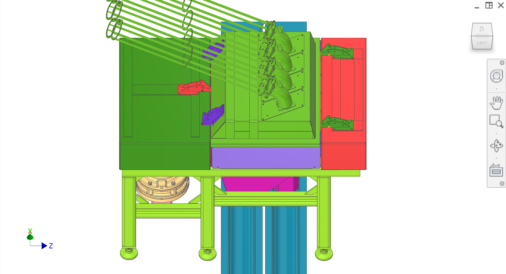
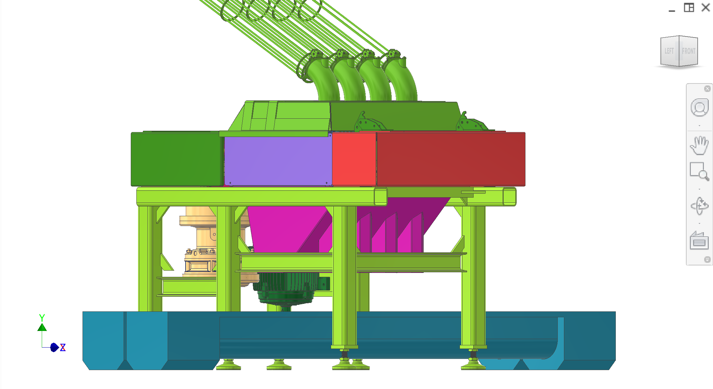
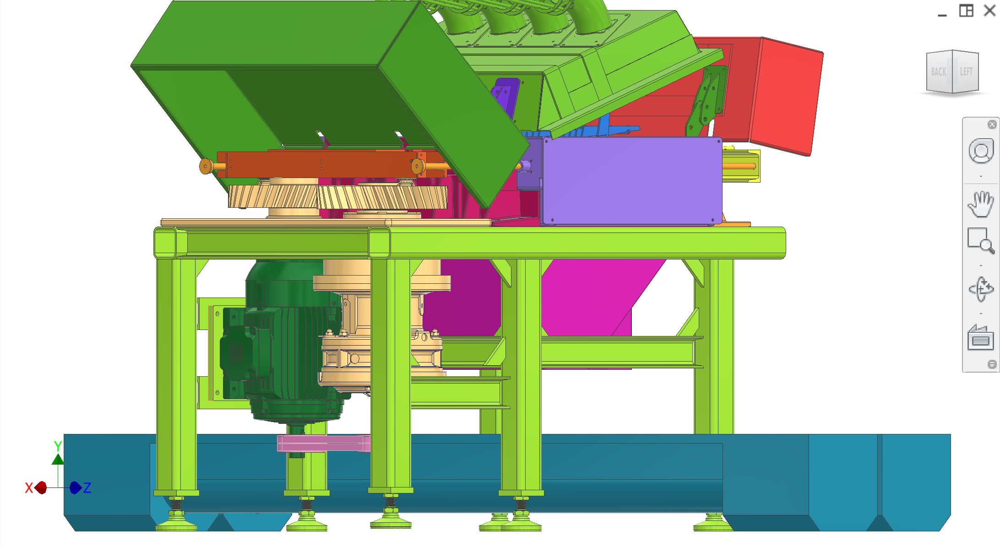
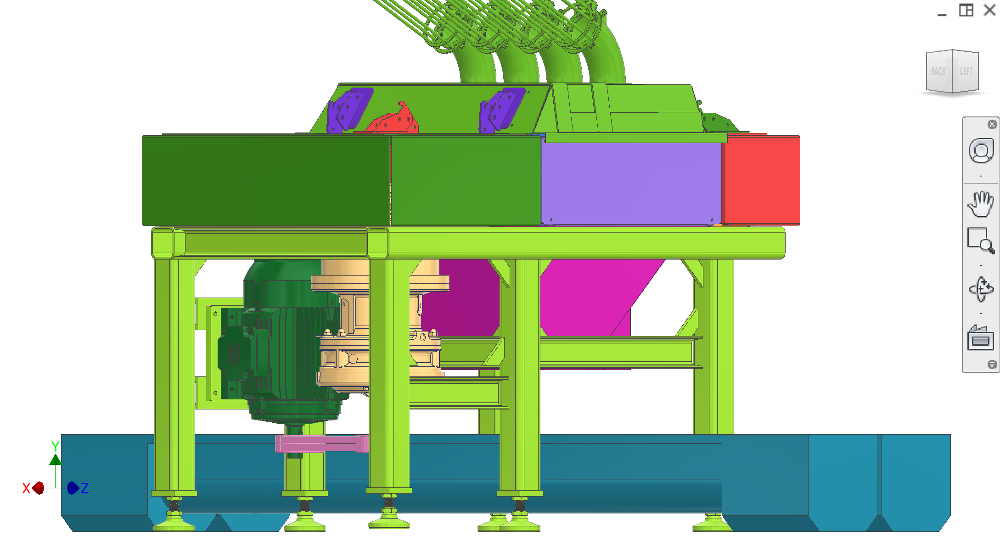
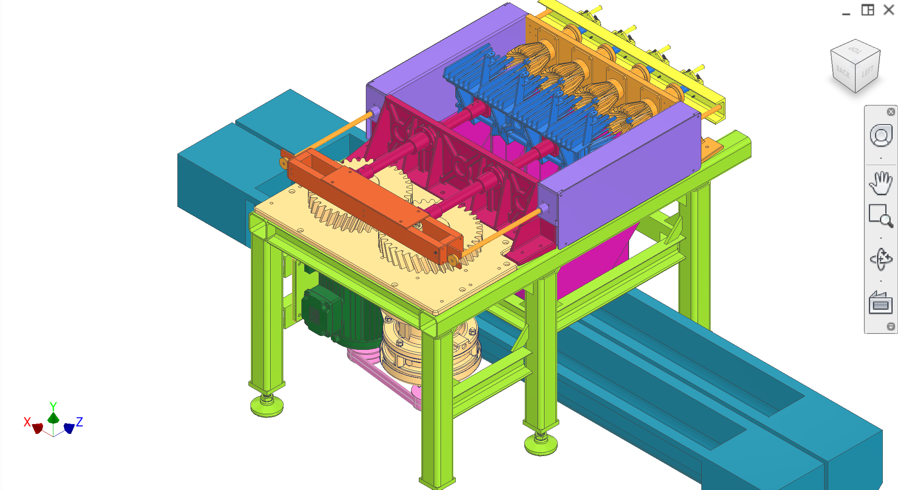
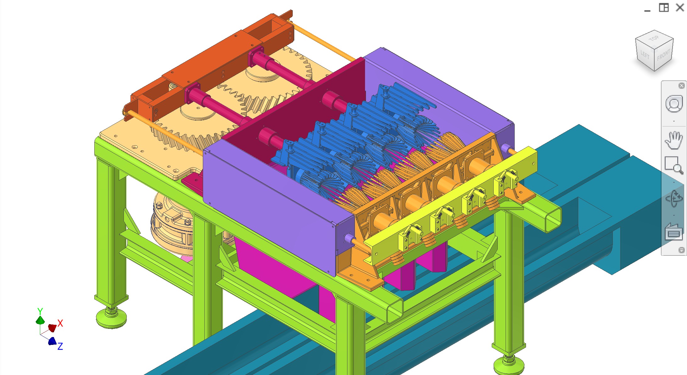

Single reference for the P6 industrial prototype and RFP structure.
The P6 is the newest generation citrus juicer in the Delijuice line. It is designed to handle a wide range of citrus varieties (including lemons) with a repeatable, industrial extraction cycle that separates juice from waste streams.
The program is setting up a pilot production environment in Jiangxi (China) with target setup in October. The first machine to prototype and validate is the P6-870; the P6-970 with 3x larger extraction modules is planned later.
P6-870 throughput: ~280 fruits/min, producing an estimated 1360 L/hr of juice. A pilot line is envisioned with 6 extractors in series to reach ~8160 L/hr, so all downstream third-party equipment must be sized to that total capacity.
The P6-870 is designed to integrate with existing industrial orange juicing lines and can be substituted for JBt Marel-style machines built by Kaiyi or similar line providers.
What P6 is
P6 is the current industrial prototype (Delijuice 870/970). Newest version; prototyping in China with design work via Jamieson. Extractors, deflectors, screw conveyors. Machine lineage: P3 → P4 → P5 (Brazil 2002, Sumitomo cyclo refs) → P6 (current). 323 = commercial/countertop (separate).
Jiangxi (JX): Factory with LTA (Long Tai An). Miniplant: 8,160 L/h, 6 extractors, turbo-filter, pasteurizer. LTA pressure for operations by October.
Drawings target: April 1st for Sean/YES fabrication (China, Shenzhen area).
How the machine works
Delijuice extraction cycle (high-level)
Fruit intake — citrus is staged one-at-a-time and presented to the extraction cavity.
Compression — fruit is compressed/peeled; juice is routed through the filtration/collection path.
Juice outflow — juice flows into collectors and then to tanks/pasteurisation equipment.
Core expulsion — a plug/core is ejected and routed to the core waste chute/auger.
Factory product flow (citrus → juice → pasteurisation → filling)
High-level process flow diagram (end-to-end)
Pre-sorted, pre-washed citrus
-> Size sorting
-> Feed line to P6-870 entry tubes
-> Extraction in P6-870
- ~1360 L/hr per extractor
- planned line: 6 extractors in series (~8160 L/hr)
-> Juice collectors -> juice tanks
-> Paddle finisher -> holding tank (agitator)
-> Tube-in-tube pasteuriser -> cooling tank
-> Filling -> 4× drum/tank set
-> Refrigeration
Third-party sorting + feed — pre-sorted, pre-washed citrus goes through a size sorter and then into the P6 feed lines and entry tubes.
P6 extraction — staged fruit is compressed/peeled; juice is routed through filtration/collection and leaves the machine as juice; peel/core waste streams are routed to their respective augers.
Juice tanking — juice flows from collectors into juice tanks sized to the total line rate (~8160 L/hr).
Downstream processing — paddle finisher, holding tank with agitator, tube-in-tube pasteuriser, cooling tank, then filling and refrigeration.
Top-level assemblies
Each subsystem has its own RFP section with photos, Q&A, and part/parameter details. The legend below lists all 11 subsystems with their CAD colour(s) and a short description.
Yoke + 35 mm shafts + flanged sealed linear bearings (LMK/LMF family) on a mount plate; converts drivetrain cam rotation into the linear motion used by extraction.
UI, safety interlocks, motor control/power distribution, and sensing (e.g. yoke position) that coordinate the extraction cycle.
Assembled views
Top-level assembly in assembled state. Figures 1–10.






Figure 1. Top-level assembly (assembled).
1 / 10
General design, manufacturing, and food-safety requirements
Materials, food safety, and surfaces
Use food-safe materials in all food and splash zones (e.g. stainless steels and compatible polymers); avoid galvanic pairs and corrosive finishes.
In food zones target surface roughness around Ra 0.8–1.6 μm so surfaces are cleanable and do not trap pulp.
Follow NSF-style guidance: no shelves, pockets, or hidden areas in food or splash zones; all food and liquid must have a defined path to drain.
Seal or weld all seams in food and splash zones so there are no capillary gaps; avoid lap joints and unsealed overlaps in these areas.
Deburr all edges; no sharp edges or burrs exposed to operators or in any zone that can collect food.
Fasteners and joints
Minimise the number of different fastener sizes; where practical restrict to M3, M5, M10, and M16 for increasing strength levels.
Avoid exposed threads in food and splash zones; use standoffs, weld studs, or through-holes with nuts outside the zone.
Prefer dowel pins for locating parts in shear; use shoulder bolts for joints that carry shear and rotation.
Minimise total fastener count with shared brackets and clear load paths; design for easy disassembly and reassembly for cleaning.
Design for manufacturability
Favour symmetric parts and avoid unnecessary handedness where possible.
Minimise machining and secondary processing by using stock sizes, simple weldments, and laser/plasma-cut profiles.
Specify tolerances sufficient for function; post-processing methods (e.g. grinding, honing, polishing) are selected by manufacturers to meet these tolerances.